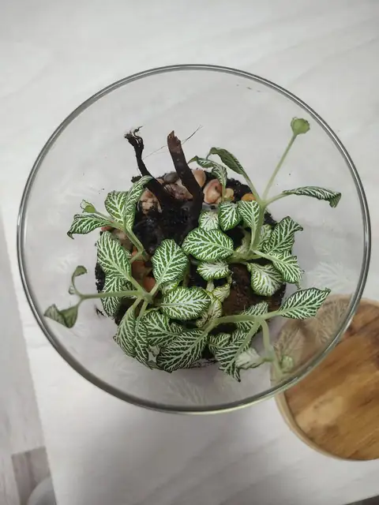
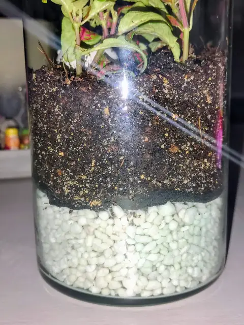
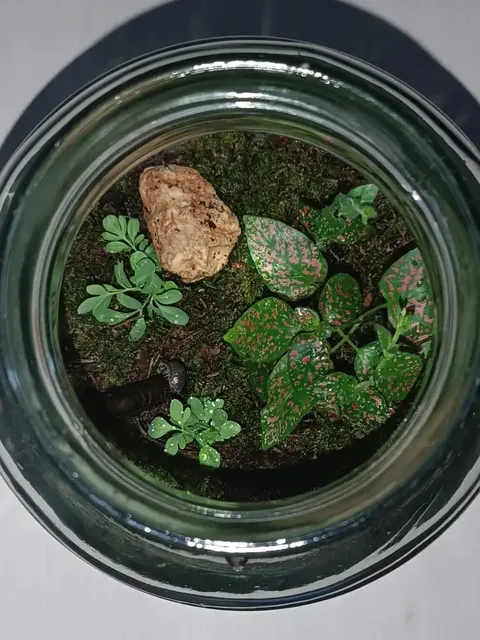
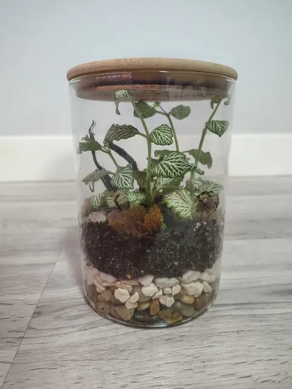
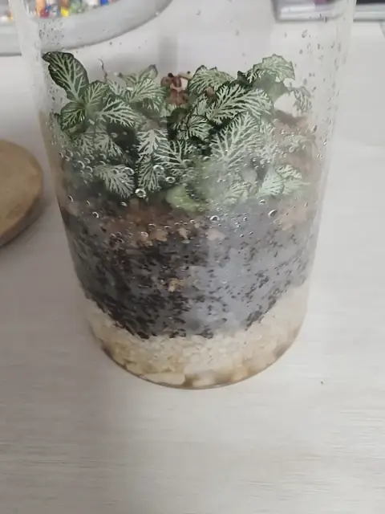
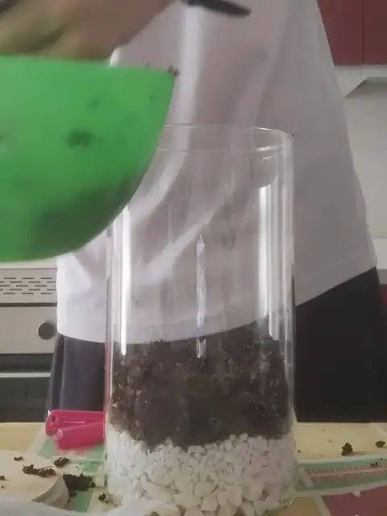

Empieza aquíCómo montar tu primer terrario cerrado (y que no se te muera)
Guía para aficionados con fotos reales: qué plantas usar, cómo hacer el drenaje y trucos para un mantenimiento casi nulo.
Sección
Todo lo que necesitas para montar un terrario cerrado desde cero: qué recipiente elegir, cómo preparar el sustrato, cuánto cuesta de verdad y una calculadora para saber cuánto material comprar. Si es tu primera vez, empieza por la guía paso a paso.

Empieza aquíGuía para aficionados con fotos reales: qué plantas usar, cómo hacer el drenaje y trucos para un mantenimiento casi nulo.
 Materiales
Materiales
¿Tarro de cocina, urna profesional o contenedor abierto? Te cuento qué recipientes uso yo y cuáles recomiendo para empezar.

SustratosAprende a preparar la mezcla casera 50-30-20. Capas, drenaje, colémbolos y el secreto para que la tierra se mantenga perfecta.

NavidadCómo meterlo en una caja para que no se rompa ni se mueva, qué pasa con la luz y el frío, y la tarjeta de cuidados para quien lo recibe.

NuevoCada cuánto riego los míos (y el truco de olerlos), dónde ponerlos, cuándo abrirlos y qué pasa si te pasas con el agua.

NuevoMi lista de la compra real: tarro de 3 €, una Fittonia que dividí en cuatro y materiales a granel. Con precios y fotos de cada paso.

HerramientaMete las medidas de tu tarro y te digo cuánta piedra, cuánta mezcla de sustrato y cuántas plantas necesitas. Gratis y con mis medidas reales.